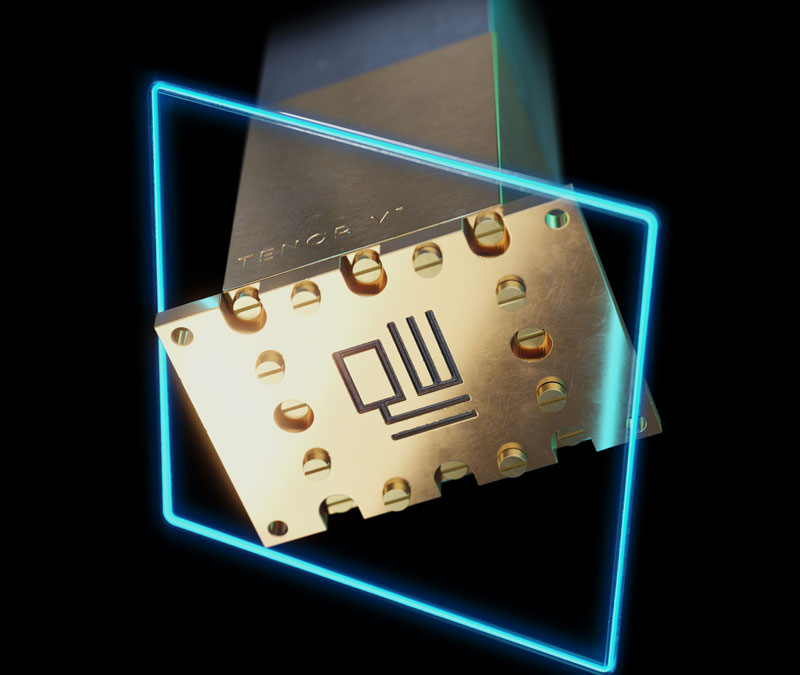

Путин заявил о важности развития нанотехнологий, отметив, что без этого у российской экономики нет будущего.
- Голландская компания QuantWare представила квантовый процессор Tenor. Он имеет 64 полностью управляемых сверхпроводящих кубита. Но главное в нём — это возможность сравнительно простого масштабирования квантовой вычислительной платформы. Это стало возможным после ухода от планарного расположения кубитов к первой в индустрии вертикальной стековой архитектуре.
- Молодая компания QuantWare выросла из совместных квантовых проектов компании Intel и нидерландского центра квантовых исследований QuTech Делфтского технологического университета (TU Delft). Два года назад она начала поставлять всем желающим серийный 5-кубитовый сверхпроводящий квантовый процессор Soprano. Решение мало чем отличалось от конкурирующих процессоров, зато новая разработка сразу выбилась из ряда предложений.
- Масштабирование — это больное место квантовых вычислительных платформ. И тем более сложно масштабировать платформу с горизонтальным размещением кубитов, ведь каждый из них требует специальных контактов на периферии чипа. Стековая компоновка даёт дополнительное пространство для манёвра как для масштабирования, так и для внутренней организации кубитов. Последнее тем более важно, что чем больше кубитов можно связать, тем легче обеспечить коррекцию ошибок — это второй бич квантовых вычислений.
- 
- Компания QuantWare не даёт развёрнутых характеристик процессора Tenor. Однако её решения уже нашли отклик среди разработчиков квантовых вычислителей. Например, на процессоры QuantWare будет опираться национальный квантовый проект Израиля. Не исключено, что в работу будет взят уже «трёхмерный» процессор как наиболее свежее и перспективное решение.